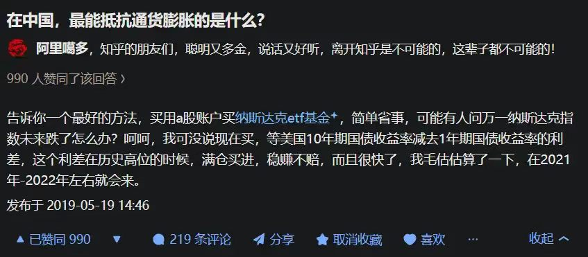

项目作品页 01 / 02
把「美债利差到历史高位就买纳斯达克 ETF」这句模糊判断，变成每天 8:10 自动运行、可推送的阈值日报。
2019 年知乎上有个回答：用 A 股账户买纳斯达克 ETF，等美债 10 年期与 1 年期收益率之差处于历史高位时买入，并预估 2021—2022 年会出现这个时点。但「历史高位」没有定义，也没有人每天盯。2026 年我把它落成规则，再交给 Agent 每天执行。

抓取、计算、生成日报由 AI Agent 执行；我负责阈值口径、数据源决策与结果核对。
| 数据源 | 结论 | 依据 |
|---|---|---|
| FRED（DGS1 / DGS10） | 主源 | 多日与 Treasury.gov 完全一致，可追溯 |
| Treasury.gov 官方曲线 | 官方校验 | 10/26 数据即取自此处，用于交叉验证 |
| primerates.com | 弃用 | 数据停在 10/08，滞后 14 个交易日 |
| neodata / westock-data | 不可用 | 前者在 Windows 必失败；后者宏观仅覆盖中国，不含美债 |
日报结构固定：数值卡片 → 利差位置与逐日变化 → 策略参考 → 数据来源与免责声明。示例（10-27）：1Y 4.47%、10Y 5.00%、利差 53BP，处于观望区间下沿，距 50BP 阈值仅 3BP，并提示 FOMC 会议风险。
10/20 漏跑一次；10/24、10/25、10/26 触发时间晚于 8:10；10/15 同日重复触发；推送依赖电脑开机。改进方向：补跑机制 + 异常告警 + 把自动化迁到常驻环境。